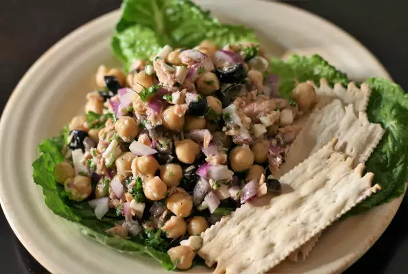

Tuna and Chickpea Salad

Description
Light and refreshing chickpea and tuna salad that can be eaten as a main dish or served with pita chips as an appetizer. For a meatier salad, add one more can of undrained tuna. You can also add drained, chopped artichoke hearts.
Ingredients
- 1 (5 ounce) can Italian tuna packed in olive oil, undrained
- 1 (16 ounce) can chickpeas (garbanzo beans), drained
- 1 (2.25 ounce) can black olives, chopped
- ¼ cup chopped Italian (flat-leaf) parsley
- ½ red onion, chopped
- 1 lemon, juiced
- ¼ cup crumbled reduced-fat feta cheese, or more to taste
- salt and ground black pepper to taste
Steps
- Stir tuna, chickpeas, olives, parsley, red onion, lemon juice, and feta cheese together in a bowl. Season with salt and pepper.